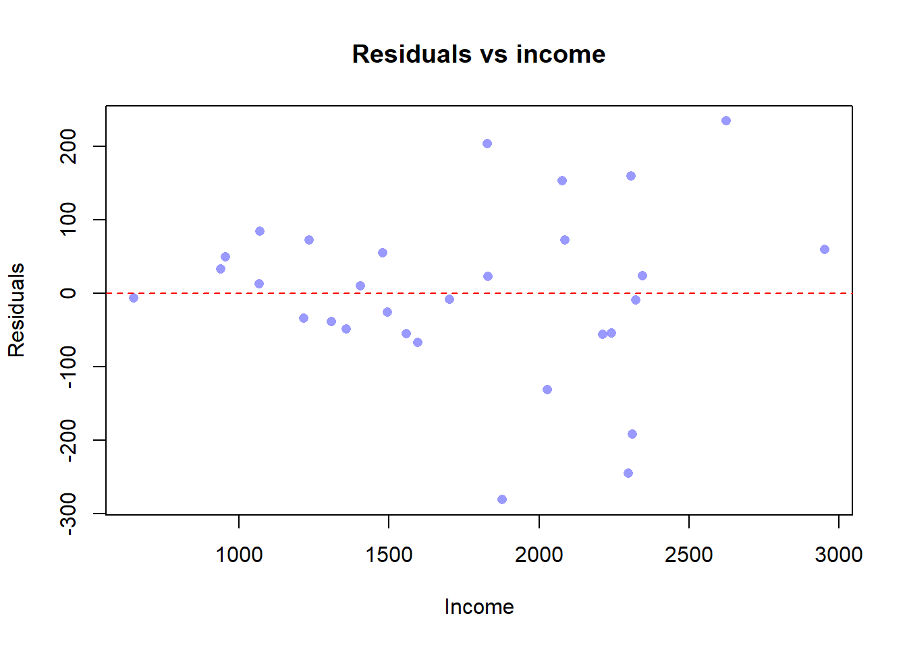

Code
library(readxl)
library(lmtest)
library(sandwich)Status: ported 2026-05-18. Reviewed by editor: pending.
By the end of this chapter the reader should be able to:
Why do conventional OLS confidence intervals understate the true uncertainty in a wage regression with very dispersed top earners — and what should we do about it?
A regression of hourly wages on years of education delivers a clean point estimate of the return to schooling. But the spread of wages around the regression line is not the same for high-school dropouts and for PhDs: graduates fan out across a much wider range of salaries. The textbook OLS formula for the standard error of \(\hat\beta_1\) assumes the spread is constant. When it is not, the reported standard errors are wrong, the \(t\)-statistics are wrong, and the policy recommendations built on them are wrong. This chapter shows how to diagnose the problem and how to fix it.
In Chapter 4 we listed the multiple linear regression assumptions MLR.1–MLR.6 that justify OLS. The homoskedasticity assumption MLR.5 states that the error variance is the same for every value of the regressors:
\[ \operatorname{Var}(u_i \mid \mathbf{x}_i) \;=\; \sigma^2, \qquad i = 1, \dots, n. \]
When MLR.5 fails, the conditional variance depends on \(\mathbf{x}_i\):
\[ \operatorname{Var}(u_i \mid \mathbf{x}_i) \;=\; \sigma_i^2, \]
and the error is said to be heteroskedastic. The Greek root is helpful: homo-skedastic means “same spread”; hetero-skedastic means “different spread”.
Workers with only primary education in a typical European labour market earn between roughly 15{,}000 and 25{,}000 euros per year — a narrow range. University graduates earn anywhere from 20{,}000 to 200{,}000 euros — a much wider range. The conditional variance of wages clearly increases with education. The error term in a wage equation \(\text{wage}_i = \beta_0 + \beta_1\,\text{educ}_i + u_i\) therefore exhibits heteroskedasticity: \(\operatorname{Var}(u_i \mid \text{educ}_i)\) grows with educ.
Heteroskedasticity is not a problem of identification. As long as \(\mathbb{E}[u_i \mid \mathbf{x}_i] = 0\) (assumption MLR.4) holds, the meaning of \(\beta_j\) as a ceteris paribus effect survives. What heteroskedasticity breaks is inference — the machinery that turns a point estimate \(\hat\beta_j\) into a confidence interval or a hypothesis test.
Heteroskedasticity is about \(\operatorname{Var}(u_i \mid \mathbf{x}_i)\); omitted variable bias is about \(\mathbb{E}[u_i \mid \mathbf{x}_i]\). The first leaves \(\hat\beta_j\) unbiased and only damages the standard errors. The second biases \(\hat\beta_j\) itself. The two problems require different tools, and the same dataset can suffer from one, the other, both, or neither.
Heteroskedasticity is the rule rather than the exception in cross-sectional microeconomic data, for at least three reasons:
These are precisely the data structures applied economists work with, which is why robust standard errors have become the default in modern practice.
Assume MLR.1–MLR.4 hold and only MLR.5 fails. Three statements summarise the consequences:
If we collect the conditional variances on the diagonal of a matrix \(\boldsymbol{\Omega} = \operatorname{diag}(\sigma_1^2, \dots, \sigma_n^2)\), the correct conditional variance of the OLS estimator is
\[ \operatorname{Var}(\hat{\boldsymbol\beta} \mid \mathbf{X}) \;=\; (\mathbf{X}'\mathbf{X})^{-1}\,\mathbf{X}'\boldsymbol{\Omega}\mathbf{X}\,(\mathbf{X}'\mathbf{X})^{-1}. \]
The “bread” \((\mathbf{X}'\mathbf{X})^{-1}\) surrounds the “meat” \(\mathbf{X}'\boldsymbol{\Omega}\mathbf{X}\) — which is why this form is universally called a sandwich estimator. The usual OLS formula simply replaces \(\boldsymbol{\Omega}\) by \(\sigma^2 \mathbf{I}_n\) and collapses the sandwich to a single slice. The White / HC1 estimator we use in §7.4 estimates \(\boldsymbol{\Omega}\) by \(\operatorname{diag}(\hat u_1^2, \dots, \hat u_n^2)\), with a small-sample degrees-of-freedom correction.
In short: heteroskedasticity is a standard-error problem, not a coefficient problem. The fix is to repair the inferential machinery (robust SEs) or, if we can afford the extra modelling, to use an estimator that exploits the variance structure (WLS).
We describe one informal diagnostic and two formal tests. The informal plot is cheap and should be the first thing you look at; the formal tests give a structured decision rule.
After estimating the OLS model, compute the residuals \(\hat u_i = y_i - \hat y_i\) and plot them against either the fitted values \(\hat y_i\) or against each regressor \(x_j\). The visual fingerprint of heteroskedasticity is a fan or wedge shape: the vertical spread of the residual cloud widens (or narrows) as you move along the horizontal axis. Squared residuals \(\hat u_i^2\) against \(x_j\) make the pattern even more obvious because the sign of the residual no longer matters.
If the cloud looks like a horizontal band of roughly constant thickness, homoskedasticity is plausible. If it spreads out — as it typically does when \(x_j\) is income, firm size, or any other “scale” variable — heteroskedasticity is the natural suspect.
The Goldfeld–Quandt (GQ) test is appropriate when you suspect heteroskedasticity is driven by one specific regressor. The idea is simple: split the sample into a low-\(x\) group and a high-\(x\) group and compare the residual variances of the two subsamples.
Steps.
\[ F \;=\; \frac{\operatorname{SSR}_2 \,/\, \operatorname{df}_2}{\operatorname{SSR}_1 \,/\, \operatorname{df}_1}\;\sim\;F_{\operatorname{df}_2,\,\operatorname{df}_1} \quad \text{under } H_0. \]
Hypotheses. \(H_0\): homoskedasticity. \(H_1\): \(\operatorname{Var}(u)\) increases with \(x\) (the most common alternative). Reject \(H_0\) when \(F\) exceeds the upper-tail critical value of the \(F\) distribution.
The GQ test was historically popular in small samples and is intuitive, but it requires the analyst to commit to a single sorting variable and to a sample-splitting rule. The Breusch–Pagan test, introduced next, drops both of these commitments.
The Breusch–Pagan (BP) test detects heteroskedasticity related to any of the regressors. It is the workhorse formal test in modern applied work.
Steps.
\[ \hat u_i^2 \;=\; \gamma_0 + \gamma_1 x_{1i} + \gamma_2 x_{2i} + \dots + \gamma_k x_{ki} + v_i. \]
\[ \operatorname{BP} \;=\; n \cdot R^2_{\text{aux}} \;\sim\;\chi^2_{k}\quad\text{under } H_0, \]
where \(R^2_{\text{aux}}\) is the coefficient of determination of the auxiliary regression and \(k\) is the number of slope coefficients in it.
Hypotheses. \(H_0: \gamma_1 = \gamma_2 = \dots = \gamma_k = 0\) (homoskedasticity). Reject when \(\operatorname{BP} > \chi^2_{k,\alpha}\).
The intuition is direct: if the squared residual is systematically explained by the regressors, then \(\operatorname{Var}(u \mid \mathbf{x})\) varies with \(\mathbf{x}\), which is the definition of heteroskedasticity. A close cousin — the White test — adds squares and cross-products of the regressors to the auxiliary regression and so detects more general forms of heteroskedasticity, at the cost of degrees of freedom.
Do not run GQ, then BP, then White, and report whichever rejects “first”. This is a form of \(p\)-hacking. Pick one test based on what you suspect before looking at the residuals, or — following modern practice — skip the testing step altogether and report robust standard errors by default.
There are two main remedies, suited to two different states of knowledge.
Suppose we know (or are willing to model) the form of the conditional variance:
\[ \operatorname{Var}(u_i \mid \mathbf{x}_i) \;=\; \sigma^2 \, h(\mathbf{x}_i), \]
where \(h(\mathbf{x}_i) > 0\) is a known function of the regressors. A typical example is \(h(\mathbf{x}_i) = x_i\) when the variance is proportional to a scale variable such as income.
Divide every term in the regression by \(\sqrt{h(\mathbf{x}_i)}\):
\[ \frac{y_i}{\sqrt{h(\mathbf{x}_i)}} \;=\; \beta_0 \frac{1}{\sqrt{h(\mathbf{x}_i)}} + \beta_1 \frac{x_{i}}{\sqrt{h(\mathbf{x}_i)}} + \frac{u_i}{\sqrt{h(\mathbf{x}_i)}}. \]
The new error \(u_i^\ast = u_i / \sqrt{h(\mathbf{x}_i)}\) has constant variance:
\[ \operatorname{Var}(u_i^\ast) \;=\; \frac{\sigma^2 h(\mathbf{x}_i)}{h(\mathbf{x}_i)} \;=\; \sigma^2. \]
OLS on the transformed model is equivalent to weighted least squares: minimise
\[ \sum_{i=1}^{n} \frac{1}{h(\mathbf{x}_i)} \bigl(y_i - \beta_0 - \beta_1 x_{i} - \dots\bigr)^2. \]
Each observation receives weight \(w_i = 1 / h(\mathbf{x}_i)\). Observations with high variance receive less weight; observations with low variance receive more. When the weights are correctly specified, WLS is BLUE: it has lower variance than OLS while remaining unbiased.
WLS is only BLUE under correctly specified weights. With wrong weights it can be less efficient than OLS, and its standard errors are again incorrect. If you have only a vague idea of the variance structure, prefer robust standard errors.
When the form of \(h(\mathbf{x})\) is unknown, the safer remedy is to keep OLS for the point estimates and to compute heteroskedasticity-consistent (HC) standard errors, also called robust or White standard errors after (White 1980).
In the simple regression case with \(\hat u_i\) denoting the OLS residual,
\[ \operatorname{se}_{\text{robust}}(\hat\beta_1) \;=\; \sqrt{\,\dfrac{\displaystyle\sum_{i=1}^{n} (x_i - \bar x)^2 \,\hat u_i^2}{\Bigl[\displaystyle\sum_{i=1}^{n} (x_i - \bar x)^2\Bigr]^2}\,}. \]
The general matrix expression is the sandwich estimator of §7.2 with \(\boldsymbol{\Omega}\) replaced by \(\operatorname{diag}(\hat u_1^2, \dots, \hat u_n^2)\). Several variants exist (HC0, HC1, HC2, HC3) that differ in their finite-sample degrees-of-freedom correction; HC1 is the default reported by Stata’s , robust option and is the standard in published applied work.
Robust SEs leave the point estimates \(\hat\beta_j\) unchanged. Only the variance — and therefore the \(t\)-statistics, \(p\)-values, and confidence intervals — is corrected.
This lab follows Tutorial 8 of the course. The dataset het_data.xlsx is a custom cross-section of household-level consumption and income, divided into three income groups (group \(\in \{1, 2, 3\}\), low to high). We fit a simple Engel-curve-style regression of consumption on income, detect heteroskedasticity, and then fix it twice — first by WLS and then by robust standard errors.
We use three packages: readxl to read the Excel file, lmtest for the Breusch–Pagan and Goldfeld–Quandt tests and for coeftest(), and sandwich for the robust variance–covariance matrix.
library(readxl)
library(lmtest)
library(sandwich)The original tutorial uses a relative path (read_excel("het_data.xlsx")) after running setwd() into the Tutorial 8 folder. For portability in this book we keep that style but document the absolute path used at compile time. Adapt the path to your machine.
het_path <- file.path(
"..", "..", "..", "Practicas", "2025", "Tutorial 8", "het_data.xlsx"
)
het_data <- read_excel(het_path)
# Construct a tercile-of-income indicator for the Goldfeld-Quandt split:
# group == 1 = low-income third, 2 = middle third, 3 = high-income third.
het_data$group <- as.integer(cut(het_data$income,
breaks = quantile(het_data$income,
probs = c(0, 1/3, 2/3, 1)),
include.lowest = TRUE))
str(het_data)tibble [30 × 4] (S3: tbl_df/tbl/data.frame)
$ id : num [1:30] 1 2 3 4 5 6 7 8 9 10 ...
$ consumption: num [1:30] 433 663 690 727 800 ...
$ income : num [1:30] 649 939 956 1067 1071 ...
$ group : int [1:30] 1 1 1 1 1 1 1 1 1 1 ...head(het_data)# A tibble: 6 × 4
id consumption income group
<dbl> <dbl> <dbl> <int>
1 1 433. 649. 1
2 2 663. 939. 1
3 3 690. 956. 1
4 4 727. 1067. 1
5 5 800. 1071. 1
6 6 777. 1215. 1The original xlsx ships with income and consumption. We add a derived group variable equal to the income tercile (1 = low, 2 = middle, 3 = high) so the Goldfeld–Quandt test below can subset the sample.
model1 <- lm(consumption ~ income, data = het_data)
summary(model1)
Call:
lm(formula = consumption ~ income, data = het_data)
Residuals:
Min 1Q Median 3Q Max
-280.684 -52.408 2.257 58.517 234.525
Coefficients:
Estimate Std. Error t value Pr(>|t|)
(Intercept) 13.94848 70.77718 0.197 0.845
income 0.65532 0.03864 16.961 2.91e-16 ***
---
Signif. codes: 0 '***' 0.001 '**' 0.01 '*' 0.05 '.' 0.1 ' ' 1
Residual standard error: 117.5 on 28 degrees of freedom
Multiple R-squared: 0.9113, Adjusted R-squared: 0.9081
F-statistic: 287.7 on 1 and 28 DF, p-value: 2.91e-16The slope \(\hat\beta_1\) is the average marginal propensity to consume out of income. To check homoskedasticity informally, plot the OLS residuals against income:
plot(het_data$income, resid(model1),
xlab = "Income",
ylab = "Residuals",
main = "Residuals vs income",
pch = 16,
col = rgb(0, 0, 1, 0.4))
abline(h = 0, lty = 2, col = "red")
The cloud opens up as income grows: the residuals fan out. This is exactly the wedge shape we warned about in §7.3.1.
Estimate the model separately on the low-income (group == 1) and high-income (group == 3) subsamples, then compare the two residual variances.
model_low <- lm(consumption ~ income, data = het_data, subset = group == 1)
model_high <- lm(consumption ~ income, data = het_data, subset = group == 3)
SSR_low <- sum(residuals(model_low)^2)
SSR_high <- sum(residuals(model_high)^2)
n_low <- nobs(model_low)
n_high <- nobs(model_high)
k <- length(coef(model_low)) # intercept + slope
df_low <- n_low - k
df_high <- n_high - k
F_gq <- (SSR_high / df_high) / (SSR_low / df_low)
F_crit <- qf(0.95, df_high, df_low)
p_gq <- 1 - pf(F_gq, df_high, df_low)
c(F = F_gq, F_crit_5pct = F_crit, p_value = p_gq) F F_crit_5pct p_value
9.582976952 3.438101233 0.002205927 If F_gq is well above F_crit_5pct — equivalently, if the \(p\)-value is below \(0.05\) — we reject homoskedasticity in favour of “variance increases with income”.
bptest())The auxiliary regression of squared residuals on income gives us \(R^2_{\text{aux}}\); the BP statistic is \(n \cdot R^2_{\text{aux}}\) and follows a \(\chi^2_1\) under \(H_0\) (we have one regressor, income).
res <- residuals(model1)
res_sq <- res^2
aux <- lm(res_sq ~ income, data = het_data)
n <- nobs(model1)
R2_aux <- summary(aux)$r.squared
BP_stat <- n * R2_aux
chi_crit <- qchisq(0.95, df = 1)
p_bp <- 1 - pchisq(BP_stat, df = 1)
c(BP_manual = BP_stat, chi2_1_5pct = chi_crit, p_value = p_bp) BP_manual chi2_1_5pct p_value
4.86609184 3.84145882 0.02738946 The package version delivers the same answer in one line:
bptest(model1)
studentized Breusch-Pagan test
data: model1
BP = 4.8661, df = 1, p-value = 0.02739A small \(p\)-value (below \(0.05\)) means we reject homoskedasticity. The two computations should agree up to rounding.
Assume \(\operatorname{Var}(u_i \mid \text{income}_i) \propto \text{income}_i\), so \(h(\text{income}_i) = \text{income}_i\). The WLS weights are \(w_i = 1 / \text{income}_i\).
wls <- lm(consumption ~ income, data = het_data, weights = 1 / income)
summary(wls)
Call:
lm(formula = consumption ~ income, data = het_data, weights = 1/income)
Weighted Residuals:
Min 1Q Median 3Q Max
-6.4405 -1.1894 0.0547 1.3568 4.7847
Coefficients:
Estimate Std. Error t value Pr(>|t|)
(Intercept) 34.45170 55.08024 0.625 0.537
income 0.64357 0.03354 19.185 <2e-16 ***
---
Signif. codes: 0 '***' 0.001 '**' 0.01 '*' 0.05 '.' 0.1 ' ' 1
Residual standard error: 2.607 on 28 degrees of freedom
Multiple R-squared: 0.9293, Adjusted R-squared: 0.9268
F-statistic: 368.1 on 1 and 28 DF, p-value: < 2.2e-16To check whether the weights were well chosen, re-test for heteroskedasticity in the WLS fit:
bptest(wls)
studentized Breusch-Pagan test
data: wls
BP = 0.0056423, df = 1, p-value = 0.9401If the BP test no longer rejects (large \(p\)-value), the assumed variance structure was approximately correct and WLS has done its job.
The safer remedy — valid even when we have no idea what \(h(\mathbf{x})\) looks like — is to keep the OLS point estimates and recompute the standard errors with vcovHC():
coeftest(model1, vcov = vcovHC(model1, type = "HC1"))
t test of coefficients:
Estimate Std. Error t value Pr(>|t|)
(Intercept) 13.948477 49.970518 0.2791 0.7822
income 0.655317 0.035729 18.3411 <2e-16 ***
---
Signif. codes: 0 '***' 0.001 '**' 0.01 '*' 0.05 '.' 0.1 ' ' 1The point estimates are identical to summary(model1). Only the standard errors, \(t\)-statistics, and \(p\)-values change.
A clean way to communicate the result is to put the two standard errors side by side and report their ratio.
se_ols <- summary(model1)$coefficients[, "Std. Error"]
se_robust <- sqrt(diag(vcovHC(model1, type = "HC1")))
comparison <- data.frame(
OLS_SE = round(se_ols, 4),
Robust_SE = round(se_robust, 4),
Ratio = round(se_robust / se_ols, 3)
)
comparison OLS_SE Robust_SE Ratio
(Intercept) 70.7772 49.9705 0.706
income 0.0386 0.0357 0.925If the ratio in the last column is materially larger than \(1\), the OLS standard errors were understating uncertainty — exactly the diagnosis we made in §7.2.
The point of this table is not to “choose” one column over the other — the coefficients are the same in both columns. The table tells you how much the OLS standard error has been distorted by heteroskedasticity. A ratio close to \(1.0\) means OLS was fine even though MLR.5 technically failed; a ratio above \(1.5\) means OLS would have led you to over-reject the null. Either way, robust SEs are now the standard column to report.
Six short multiple-choice questions. Try each one before opening the answer.
Heteroskedasticity in a linear regression model means:
Answer: B. Heteroskedasticity is, by definition, a failure of MLR.5: the conditional variance of \(u\) varies with the regressors. The other options describe MLR.4, autocorrelation, and multicollinearity respectively.
Under heteroskedasticity (with MLR.1–MLR.4 still holding), OLS is:
Answer: C. Unbiasedness and consistency of \(\hat\beta_j\) do not require MLR.5. Efficiency (BLUE) and the validity of the textbook standard error formula do.
Why do we say heteroskedasticity is an inference problem, not an identification problem?
Answer: C. The causal interpretation of \(\hat\beta_j\) survives heteroskedasticity. What fails is the machinery that turns the estimate into a \(t\)-test or a confidence interval.
The Breusch–Pagan test runs an auxiliary regression of:
Answer: B. The BP test regresses the squared residuals on the regressors; under \(H_0\) of homoskedasticity, \(n R^2_{\text{aux}}\) is asymptotically \(\chi^2_k\).
The Goldfeld–Quandt test compares:
Answer: B. GQ splits the sample by the suspected variable, fits the regression on each half, and uses the ratio of mean squared residuals as an \(F\) statistic.
When should you prefer Weighted Least Squares to OLS with robust standard errors?
Answer: A. WLS is BLUE only under correctly specified weights. With unknown variance structure, OLS plus robust SEs is the safer default; with a credible model for \(h(\mathbf{x})\), WLS buys efficiency.
Exercise 7.1 ★ — Spotting heteroskedasticity. For each of the following regressions, predict whether the error term is likely to be heteroskedastic and explain why in one sentence.
Exercise 7.2 ★ — Reading a BP output. A student runs bptest(lm(consumption ~ income, data = het_data)) and obtains a test statistic of about \(9.8\) on \(1\) degree of freedom, with \(p\)-value \(\approx 0.002\).
Exercise 7.3 ★★ — Goldfeld–Quandt by hand. Suppose for a regression of consumption on income you obtain \(\operatorname{SSR}_{\text{low}} = 120\) on \(\operatorname{df}_{\text{low}} = 28\) observations in the low-income subsample, and \(\operatorname{SSR}_{\text{high}} = 540\) on \(\operatorname{df}_{\text{high}} = 28\) in the high-income subsample. The \(5\%\) critical value of \(F_{28,28}\) is approximately \(1.88\).
A full answer is given in the Instructor Edition.
Exercise 7.4 ★★ — Why the sandwich. Show that under homoskedasticity (\(\boldsymbol{\Omega} = \sigma^2 \mathbf{I}_n\)), the sandwich variance
\[ (\mathbf{X}'\mathbf{X})^{-1}\mathbf{X}'\boldsymbol{\Omega}\mathbf{X}(\mathbf{X}'\mathbf{X})^{-1} \]
reduces to the usual OLS variance \(\sigma^2(\mathbf{X}'\mathbf{X})^{-1}\). Use this to argue, in one paragraph, that the robust standard error is never worse asymptotically than the OLS standard error.
A full answer is given in the Instructor Edition.
Exercise 7.5 ★★ — WLS as transformed OLS. Take the SLR model \(y_i = \beta_0 + \beta_1 x_i + u_i\) with \(\operatorname{Var}(u_i \mid x_i) = \sigma^2 x_i\) (so \(x_i > 0\)).
A full answer is given in the Instructor Edition.
Exercise 7.6 ★★★ — Lab extension. Using het_data.xlsx from Tutorial 8:
income.A full answer is given in the Instructor Edition.